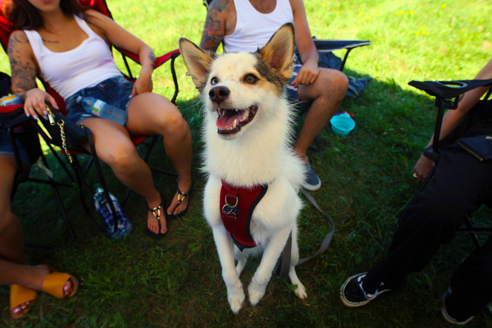
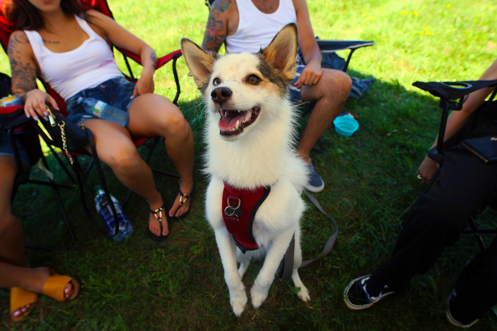
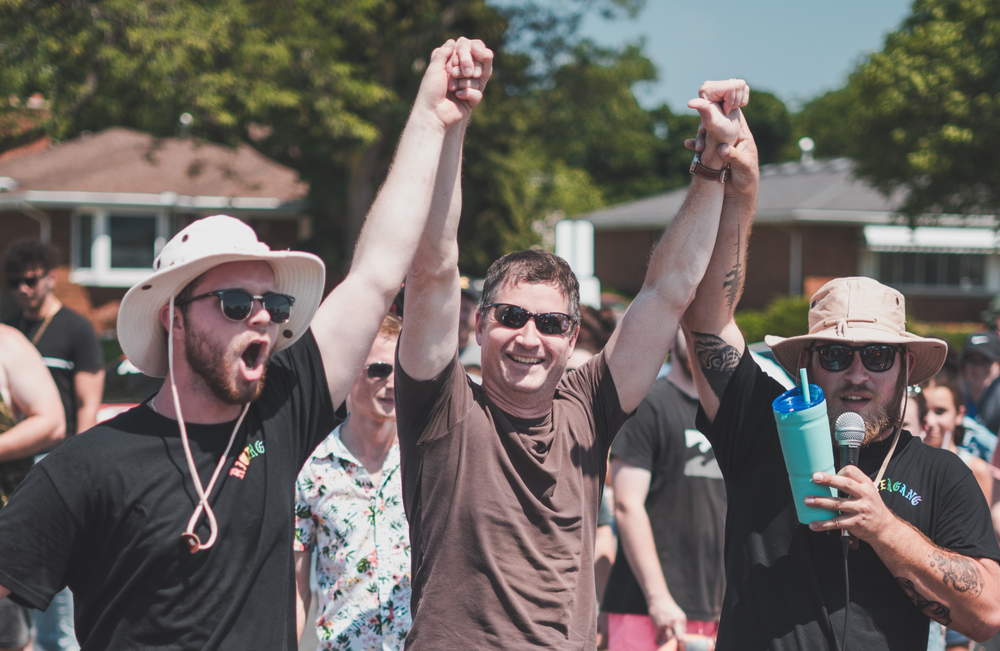
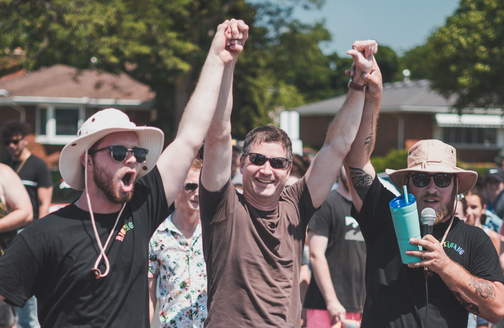

Events
Upcoming Events
Canadian Mental Health Association - Windsor Essex - 2020
When: Saturday, July 25th - Noon to 5:00pm
Where: Parks & Rec Gastropub Sports Bar
Registration: Register Online Here
Vehicle Admission: $20/car + Donations
Spectator Admission: Free, but donations are encouraged
Schedule
10:30 to 11:45 - Vendors/Sponsors setup
12:00 - Event start; please do not arrive before noon!
1:00 - Opening Remarks
3:15 - Voting for People’s Choice closes
3:50 - Awards Presentation
4:00 - Drawing of Raffle Prizes
Building off the success of last year's event we plan to keep things very similar this time around. The event will begin at noon at Parks & Rec Gastropub and end at 5:00pm. Food and drink will be provided by Parks & Rec with a portion of the proceeds going to the Canadian Mental Health Association. We encourage all attendees to take advantage of the special menu provided for the day of the event. Please drink responsibly.
How to Register
Due to the large turnout and limited number of spaces we ask that you register online on our Registration Page. Please fill out all your personal and vehicle details on the registration form and submit a photo of the car you will be registering. By pre-registering online, you are automatically entered in a chance to win a $200 gas card! You must be present at the draw in order to collect this prize.
Upon completion of your registration you will be sent your Vehicle number and further information for entry into the event. If you or someone you know is unable to register online, please contact us and we will do our best to accomodate you.
Raffle Prizes
We will have a number of raffle prizes donated by our event sponsors with raffle tickets being sold until 4:00pm. Raffle tickets will be sold in two tiers:
Blue Ticket Prices
3 tickets for $5
Arm's Length for $20
Red Ticket Prices
1 ticket for $5
5 tickets for $20
The draw for raffle prizes will begin at 4:00pm. You will not need to be in attendance to win your prize but your contact information must be clear and completely filled out on the back of the winning ticket. Please keep an eye on the events page for a complete list of sponsors and raffle prizes.
Awards
There will be a number of awards that can be won for different vehicle classifications. The complete list of awards and their individual sponsors will be posted in the weeks leading up to the event. The winners of the awards will be determined the same way as last year’s event; People’s Choice.
When you enter the event you will be given a placard with your vehicle number that is to be displayed on your dashboard/windshield. You will also receive a voting card to vote for the cars you think best deserve the awards for each classification. All cars that enter the show are eligible to win an award as long as your placard is clearly displayed. Spectators can also participate in the voting process. We will have voting cards available at the registration table for a monetary donation of your choice. We encourage all attendees to participate in selecting the winners of the awards. Please see our Past Events page for more details of the awards that were handed out last year.
Past Events
Cars for a Cause - Canadian Mental Health Association - Windsor Essex - 2019
On July 20th, 2019 Cars for a Cause hosted our first ever event thanks to the help of our many sponsors. This event was a car show that allowed many of Windsor’s car enthusiasts to get together and compete for various prizes, including Best in Show and Best Domestic. Because of the organizers’ involvement in the Windsor car enthusiast scene, word about the event spread quickly and people quickly began responding to the event. The first Cars for a Cause car show was held at Parks & Rec Gastropub from noon to 5:00pm. There was something for everyone as all attendees were able to win raffle prizes regardless of if they entered a car in the show. The generosity of many local vendors was full on display as they donated various prizes to support the cause.
Our sponsors helped us put together some incredible prizes to be won, which included over $3000 in gift cards, an epoxy floor, detailing packages, and much more. It was amazing to see the community and local vendors come together to support an important cause that needs more attention. The event saw over 250 cars attend and $11,125.25 raised for the Canadian Mental Health Association.
The success of this event showed us just how well the car community as a whole could come together for an important cause. The feedback from the first Cars for a Cause car show was overwhelmingly positive and, combined with how well everyone came together to support the cause, it motivated us to continue on with these types of events to benefit various causes in the future. Using the feedback and positive support we received for our initial event, our goal is to use that success to put on future events and help out even more charitable organizations.
Gallery
 



 
